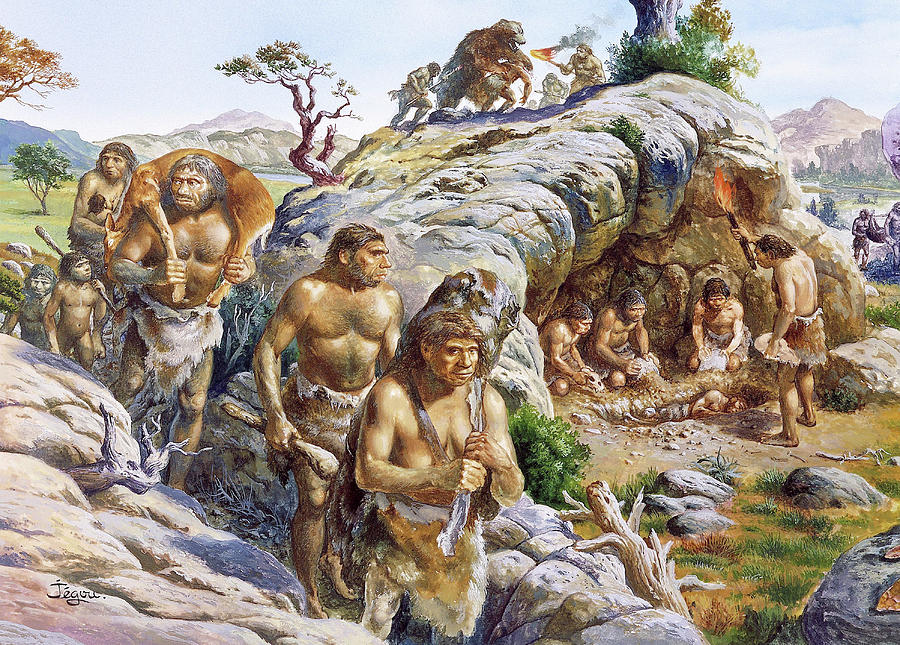

Manifesto
Why Embracing Your Inner Neanderthal is the Future (and Tarzan Proves It!)
In an era of endless TikToks, overpriced oat milk lattes, and existential crises induced by the sheer number of streaming services, it’s time we return to our roots—our real roots. We’re talking about thick brow ridges, robust physiques, and an uncanny ability to communicate with a single grunt. Neanderthals had it all figured out, and their way of life is not just better—it’s the blueprint for happiness. Just ask Tarzan.
1. Connection to Nature
Forget Fitbit and mindfulness apps—Neanderthals had the ultimate holistic lifestyle. Like Tarzan, they didn’t need artificial intelligence to track their steps or meditation reminders. They swung through trees, foraged for berries, and occasionally wrestled wild animals. Tarzan’s primal existence proves that a life closer to nature builds strength, resilience, and a six-pack without a gym membership.
2. Simplicity is the Key to Happiness
Neanderthals didn’t stress over taxes, parking tickets, or unsubscribing from email newsletters. Their worries were straightforward: “Where’s the next mammoth?” Similarly, Tarzan’s life was gloriously uncomplicated. When you strip life down to its bare essentials (literally), you find joy in the simple things: a sunny day, a good vine swing, and the occasional elephant stampede.
3. A Stronger Sense of Community
Neanderthals were all about family. They huddled together, shared resources, and thrived as a collective. Tarzan, though raised by gorillas, understood the power of a tight-knit tribe. Compare that to today’s lonely, cubicle-confined existence, and the appeal of shared Neanderthal caves becomes crystal clear.
4. Practical Fashion Choices
Why waste time agonizing over outfits? Neanderthals rocked timeless looks—fur, leather, and maybe a bone accessory if they were feeling fancy. Tarzan took it up a notch with his iconic loincloth, proving that minimalism is not just a trend but a lifestyle. Besides, do you really need another Black Friday sale?
5. Raw Physical Fitness
Without ergonomic chairs and electric scooters, Neanderthals and Tarzan stayed in peak physical condition through everyday survival. Climbing trees, hunting prey, and carrying rocks kept them in shape. Try swinging through your local jungle (or playground) and feel the burn. You won’t need CrossFit when your entire life is CrossFit.
6. Communication Beyond Words
Why type essays and send emails when a well-timed grunt will suffice? Tarzan had conversations with gorillas, elephants, and even Jane using the universal language of the wild. Neanderthals thrived with non-verbal cues and meaningful looks—far superior to emojis and “read at 2:43 PM.”
7. Immune to Modern Nonsense
Cancel culture? Credit scores? The existential dread of watching a group chat spiral out of control? Neanderthals didn’t have to worry about any of it. Tarzan’s jungle lifestyle demonstrates that stepping away from societal pressures allows us to thrive on instinct, courage, and bananas.